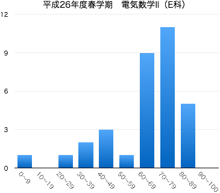

2014年度春学期 電気数学 II
Mathematics for Electrical and Electronics Engineers II
月4限 15:05-16:45 | 2-275教室 | 対象：電気電子工学科1年生
担当：佐藤 弘康（hiroyasu [at] nit.ac.jp | W1棟204 | 0480-33-7972）
電気電子工学では、指数関数・対数関数やベクトルを用いて記述される現象が数多く見受けられ、その知識は欠かせない。 専門科目の理解に必要とされる読解力・計算力を身に付けるために、指数関数・対数関数およびベクトルについて学習する。基礎的な計算技法に習熟するとともに、電気数学Ⅰで学習する三角関数・複素数との関係についても理解する。
| 第1回 | 4月 | 7日（月） | ガイダンス，ミニクイズ（2次関数のグラフ，2次方程式） |
| 第2回 | 14日（月） | 指数法則，累乗根の定義 II-1(p.22, 23) 10.1 10.2 | |
| 第3回 | 21日（月） | 累乗根の性質 II-1(p.22, 23) ，指数の拡張 II-2(p.24, 25) 10.1 10.2 | |
| 第4回 | 28日（月） | 指数関数とそのグラフ II-3(p.26) | |
| 第5回 | 5月 | 12日（月） | 指数方程式 II-4(p.27) 対数とその性質・底の変換公式 II-5(p.28, 29) 10.3 |
| 第6回 | 19日（月） | 対数関数とそのグラフ II-6(p.30) | |
| 第7回 | 26日（月） | 対数方程式 II-7(p.31) | |
| 第8回 | 6月 | 2日（月） | ベクトル，空間の座標 (1) II-8(p.32, 33) |
| 第9回 | 9日（月） | 空間の座標 (2) II-8 13.1 13.2 小テスト（中間試験） 問題 解答 |
|
| 第10回 | 16日（月） | 2点間の距離の公式 II-8 ベクトルとその演算 II-9 13.4 |
|
| 第11回 | 23日（月） | ベクトルとその演算の性質 II-9 13.4 ベクトルの基本ベクトル表示 II-10 13.3 |
|
| 第12回 | 30日（月） | ベクトルの成分表示 II-11 | |
| 第13回 | 7月 | 7日（月） | 内積とその性質 II-12 |
| 第14回 | 14日（月） | 内積の応用 13.5 | |
| 試験 | 28日（月） | 期末試験 (14:00 -- 15:00) |
|  |
|